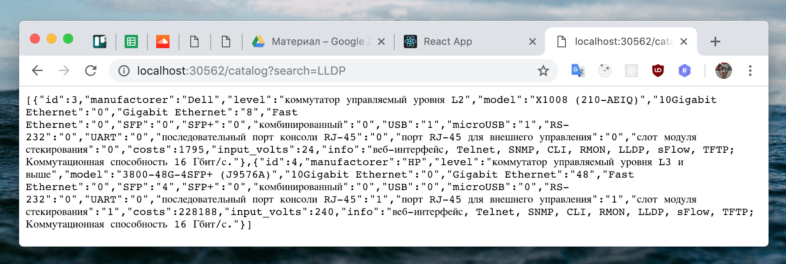

Практическая работа 6
Онлайн версия доступна по ссылке
План отчёта
- Написание оконечных точек REST сервера.
- Проверка ответов в браузере.
Написание оконечных точек REST сервера.
Добавим в файл приложения backend/src/app.js код:
app.get('/book', async (req, res) => {
const searchPattern = req.query.search || '';
const { rows: result } = await query({
text: `
select * from book where
code ilike $1 OR
author ilike $1 OR
name ilike $1 OR
publisher ilike $1 OR
topic ilike $1
;`,
values: [`%${searchPattern}%`],
});
res.json(result);
});
app.get('/reader', async (req, res) => {
const searchPattern = req.query.search || '';
const { rows: result } = await query({
text: `
select * from reader where
last_name ilike $1 OR
first_name ilike $1 OR
middle_name ilike $1 OR
address ilike $1 OR
home_phone ilike $1 OR
work_phone ilike $1
;`,
values: [`%${searchPattern}%`],
});
res.json(result);
});
Разберём как это работает:
app.get('/reader', ...function...) добавляет функцию обработчик, которая будет срабатывать, когда пользователь перейдет по URL /readerconst searchPattern = req.query.search || ''; - берет значение, которое было передано в url строке http://localhost:38562/book?search=блокнот в параметре search и сохраяет в переменную searchPattern. Если значение нет, то подставляется пустая строка, чтобы приложение корректно работало, когда поискового слова нет. При этом браузер кодирует символы в такой формат http://localhost:38562/book?search=%D0%B1%D0%BB%D0%BE%D0%BA%D0%BD%D0%BE%D1%82 , а серверный фраемворк 'express' автоматически его декодирует обратно в строку 'блокнот'- values:
[%${searchPattern}%'] - подставляем строку в шаблон, в результате получится %блокнот%
select * from reader where
last_name ilike $1 OR
first_name ilike $1 OR
middle_name ilike $1 OR
address ilike $1 OR
home_phone ilike $1 OR
work_phone ilike $1
; - сам запрос, который выполняет поиск по всем текстовым полям с сформированным шаблоном переданным через параметрыconst { rows: result } = await query({.....запрос и параметры....}); - посколько сама функция query асинхронная то для корректной работы необходимо ключевое слово await, jit среда исполнения дождется результата без блокировки очереди событий по этому может быть выполнено множество запросов одновременно. Ограничение только кол-вом одновременных соединений к БД, что тоже настраивается. По этому фактическое ограничение только в RAM памяти. Далее выполняется const { rows: result } деструктуризация объекта с присваиванием значения в константу.res.json(result); - отправляем результат из БД назад клиенту в браузер
Перезапустим контейнеры
docker-compose up --build
Проверка ответов в браузере.
Перейдем в браузере по адресу http://localhost:30562/book И увидим список всех книг
 Перейдем в браузере по адресу
Перейдем в браузере по адресу http://localhost:30562/book?search=блокнот И увидим отфильтрованый список книг

Перейдем в браузере по адресу http://localhost:30562/reader И увидим список всех читателей
 Перейдем в браузере по адресу
Перейдем в браузере по адресу http://localhost:30562/reader?search=євген И увидим отфильтрованый список читателей
 Так же лог БД одного из запросов
Так же лог БД одного из запросов